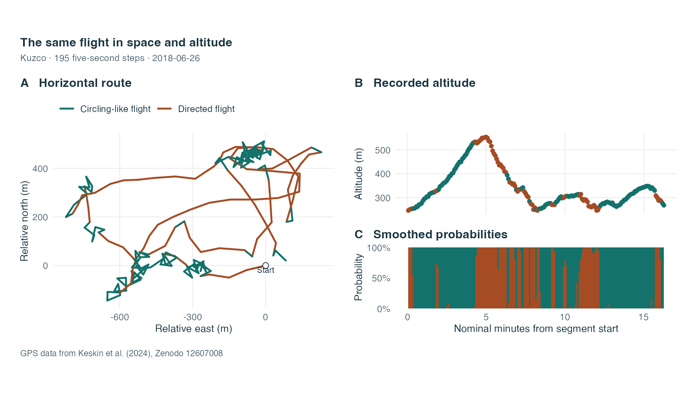
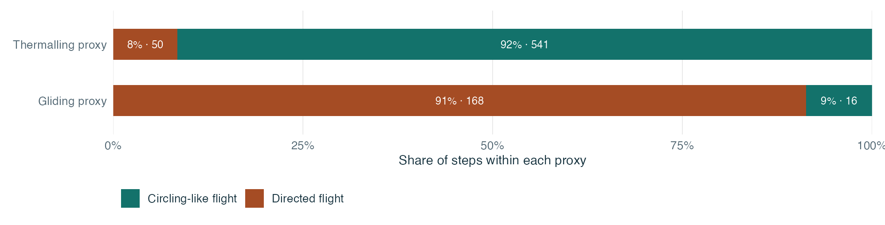
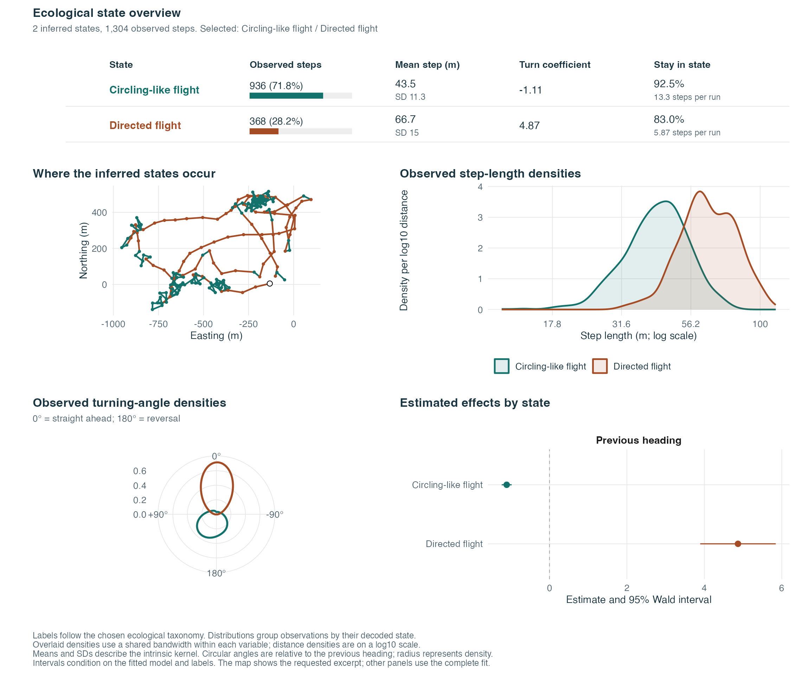
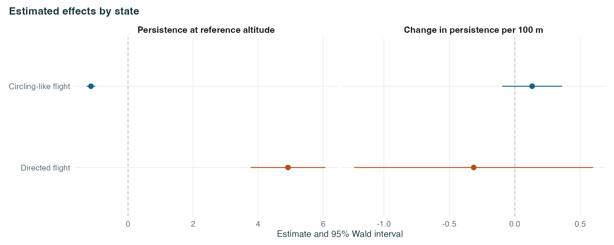
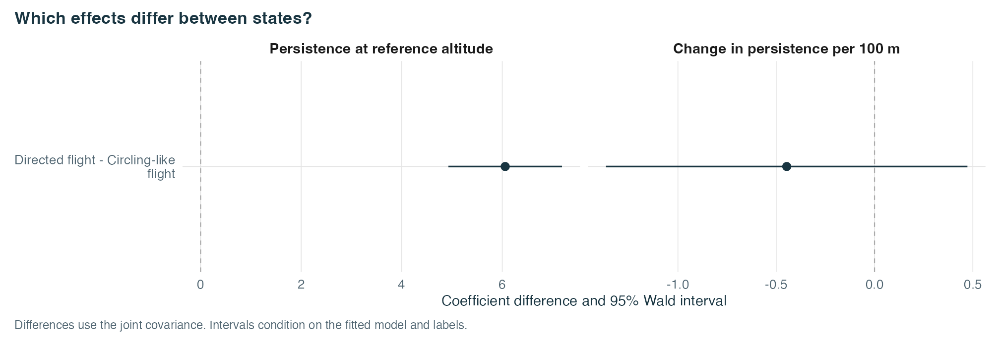

Configurable taxonomies for condor flight
Source:vignettes/condor-taxonomies.Rmd
condor-taxonomies.RmdCan the turns in a condor’s GPS track distinguish curved flight from directed flight? We give the two states our own names and fit the model to horizontal steps and turns. After fitting, we compare the labels with altitude and with the flight proxies from the study.
GPS data
Kuzco’s GPS fixes come from the flight dataset of Keskin et al. (2024), distributed under CC BY 4.0. The associated study distinguishes thermalling and gliding using path curvature and vertical speed. Our prepared subset contains 1,304 steps in 17 segments across seven dates. It uses measured fixes near a five-second clock, omits intervals whose endpoints have source ground speed below 3 m/s, splits gaps and retains segments with at least 12 fitted steps. Coordinates are relative to a daily origin. Keskin et al. (2025)
library(behavSSF)
library(ggplot2)
theme_set(theme_ssf())
knitr::opts_chunk$set(dev.args = list(bg = "white"))
library(patchwork)
library(stats)
knitr::opts_chunk$set(collapse = TRUE, comment = "#>", fig.align = "center",
fig.retina = 2, fig.width = 10.4, dev.args = list(bg = "white"))
path <- system.file("extdata", "condor-flight-steps.csv", package = "behavSSF",
mustWork = TRUE)
gps <- utils::read.csv(path)
steps <- prepare_ssf_steps(gps, density_measure = "area", time = "seconds",
expected_interval = 5)Define and fit the candidate
The two labels are assigned in increasing order of the signed angular persistence coefficient. The candidate also requires a positive coefficient for directed flight and a gap greater than 1 between the two coefficients. These are example contrasts for this demonstration. Numerical stability, Viterbi occupancy and self-transition checks apply alongside the custom rules.
flight_modes <- ssf_taxonomy(
name = "flight_modes",
labels = c("Circling-like flight", "Directed flight"),
order_by = "persistence",
rules = function(states) {
p <- setNames(states$metrics$persistence, rownames(states$metrics))
c(persistence_gap = p[["Directed flight"]] - p[["Circling-like flight"]] > 1,
forward_persistence = p[["Directed flight"]] > 0)
}
)
result <- fit_guided_ssf(
steps, convention = "area", normalization = "exact",
taxonomies = list(flight_modes, "Other"),
persistence_bounds = c(.05, .995),
n_starts = 8, short_iter = 100, long_iter = 900, seed = 1729
)
print(result)
#> Guided HMM-SSF with 1304 observed steps
#> Candidate taxonomies in the order tried
#> flight_modes (Circling-like flight / Directed flight) [Selected]
result$history$flight_modes$assessment$checks
#> converged hessian score valid_kernel
#> TRUE TRUE TRUE TRUE
#> transition occupancy state_order persistence_gap
#> TRUE TRUE TRUE TRUE
#> forward_persistence
#> TRUEThe search accepts the first candidate that passes. We set the upper self-transition bound to 0.995 to allow a flight mode to persist across many five-second steps. The turning kernel is symmetric, so left and right turns of the same size have equal density within a state.
stopifnot(identical(result$taxonomy, "flight_modes"))
assessment <- result$assessment
fit <- result$fit
gps$state <- factor(assessment$labels[fit$state], levels = flight_modes$labels)
probabilities <- as.data.frame(fit$posterior)
names(probabilities) <- assessment$labels
state_summary <- data.frame(
State = assessment$labels,
Steps = tabulate(fit$state, nbins = fit$n_states),
Share = round(100 * assessment$occupancy, 1),
`Mean length (m)` = round(1000 * assessment$metrics$mean_step, 1),
Persistence = round(assessment$metrics$persistence, 2),
check.names = FALSE
)
names(state_summary)[3] <- "Share (%)"
knitr::kable(state_summary, row.names = FALSE)| State | Steps | Share (%) | Mean length (m) | Persistence |
|---|---|---|---|---|
| Circling-like flight | 936 | 71.8 | 43.5 | -1.11 |
| Directed flight | 368 | 28.2 | 66.7 | 4.87 |
See the states along a continuous segment
The map shows the longest fitted segment. The altitude panel uses the same steps and colours each endpoint by its Viterbi state. Altitude is displayed after fitting. The probability strip shows the smoothed probabilities conditional on the fitted model.
palette <- c("Circling-like flight" = "#13726B", "Directed flight" = "#A54C24")
ink <- "#183345"
flight_theme <- theme_ssf() + theme(legend.position = "bottom")
longest <- names(which.max(table(gps$ID)))
i <- which(gps$ID == longest)
track <- gps[i, ]
track$minute <- seq_len(nrow(track)) * 5 / 60
origin <- track[1, c("x0_m", "y0_m")]
for (name in c("x0_m", "x_m")) track[[name]] <- track[[name]] - origin$x0_m
for (name in c("y0_m", "y_m")) track[[name]] <- track[[name]] - origin$y0_m
route <- ggplot(track) +
geom_segment(aes(x = x0_m, y = y0_m, xend = x_m, yend = y_m, colour = state),
linewidth = .95, lineend = "round") +
annotate("point", x = 0, y = 0, shape = 21, fill = "white", colour = ink, size = 2.6) +
annotate("text", x = 0, y = -18, label = "Start", colour = ink, size = 3.1) +
scale_colour_manual(values = palette, name = NULL) +
coord_equal() +
labs(title = "A Horizontal route", x = "Relative east (m)", y = "Relative north (m)") +
flight_theme
altitude <- ggplot(track, aes(minute, altitude_m)) +
geom_line(colour = "#93A6AC", linewidth = .55) +
geom_point(aes(colour = state), size = 1.65) +
scale_colour_manual(values = palette, guide = "none") +
labs(title = "B Recorded altitude", x = NULL, y = "Altitude (m)") +
flight_theme + theme(axis.text.x = element_blank())
strip <- do.call(rbind, lapply(names(probabilities), function(label) {
data.frame(minute = track$minute, p = probabilities[i, label], state = label)
}))
strip$state <- factor(strip$state, levels = names(palette))
uncertainty <- ggplot(strip, aes(minute, p, fill = state)) +
geom_col(width = 5 / 60) +
scale_fill_manual(values = palette, guide = "none") +
scale_y_continuous(breaks = c(0, .5, 1), labels = c("0%", "50%", "100%"),
expand = expansion(mult = c(0, .02))) +
labs(title = "C Smoothed probabilities", x = "Nominal minutes from segment start",
y = "Probability") +
flight_theme + theme(panel.grid.major = element_blank())
panels <- ((route | (altitude / uncertainty + plot_layout(heights = c(1.3, 1)))) +
plot_layout(guides = "collect")) & theme(legend.position = "bottom")
panels + plot_annotation(
title = "The same flight in space and altitude",
subtitle = paste("Kuzco ·", nrow(track), "five-second steps ·", track$day[1]),
caption = "GPS data from Keskin et al. (2024), Zenodo 12607008",
theme = theme_ssf()
)
Compare with the published flight proxies
At each step midpoint, we use the archived curvature and vertical speed to apply the pointwise cutoffs from the flight study. The thermalling proxy requires absolute curvature above 0.01 m⁻¹ and positive vertical speed. The gliding proxy requires absolute curvature below 0.01 m⁻¹ and negative vertical speed. The original study applies further bout and wind processing. Here the proxy is a pointwise comparison, and curvature shares information with the horizontal data in the fit. The comparison is descriptive.
classified <- !is.na(gps$source_proxy)
agreement <- table(
`Inferred state` = gps$state[classified],
`Published proxy` = gps$source_proxy[classified]
)
knitr::kable(agreement)| Gliding proxy | Thermalling proxy | |
|---|---|---|
| Circling-like flight | 16 | 541 |
| Directed flight | 168 | 50 |
aligned <- agreement["Circling-like flight", "Thermalling proxy"] +
agreement["Directed flight", "Gliding proxy"]
round(tapply(gps$vertical_m_s, gps$state, median), 2)
#> Circling-like flight Directed flight
#> 0.4 -0.4Of the 775 steps with a proxy, 709 align with the corresponding flight label. The other 529 steps have no proxy under these cutoffs. The median measured altitude change per second is positive in the circling-like state and negative in the directed state. These estimates describe a single tracked bird and a single time scale.
matches <- as.data.frame(agreement)
names(matches) <- c("state", "proxy", "n")
matches$share <- ave(matches$n, matches$proxy, FUN = function(x) x / sum(x))
matches$label <- paste0(round(100 * matches$share), "% · ", matches$n)
ggplot(matches, aes(share, proxy, fill = state)) +
geom_col(width = .55) +
geom_text(aes(label = label), position = position_stack(vjust = .5),
colour = "white", size = 3.2) +
scale_fill_manual(values = palette, name = NULL) +
scale_x_continuous(breaks = seq(0, 1, .25), labels = paste0(seq(0, 100, 25), "%"),
expand = expansion(mult = 0)) +
labs(x = "Share of steps within each proxy", y = NULL) +
flight_theme + theme(panel.grid.major.y = element_blank())
Adapt the specification to another species
Choose the candidate labels and contrasts before inspecting the
decoded states. The constructor also accepts a ranking function of the
unlabelled movement metrics and coefficients. A rule can compare
labelled coefficients, standard errors, transition probabilities and
occupancy. If an assessment rule is false, the returned history records
its name. A custom sequence can include a simpler candidate or the
built-in "Other" fallback.
For a directional habitat hypothesis, include the compatible target
term in the candidate formula and define its bearing at the step origin.
The article’s four candidates remain available by leaving
taxonomies at its default. See ?ssf_taxonomy
and ?fit_guided_ssf for the input contracts.
Read movement, context and uncertainty together
The same colours now link the named states to the track, the superimposed distance densities, the circular turning densities and the coefficient intervals. Zero on the circle means continuing straight ahead; 180 degrees means a reversal. The densities describe observed steps grouped by their decoded state, not independent behavioural measurements.
plot_ssf_states(result, coords = c("x0_m", "y0_m", "x_m", "y_m"),
segment = longest, step_scale = 1000, step_unit = "m", coord_unit = "m",
colours = palette)
Let another variable refine the model
An ecologist can add any estimable covariate or interaction. For this bird, we have altitude measurements along the observed path, but no altitude for hypothetical control endpoints. We therefore use altitude at the start of a step, obtained from the preceding recorded endpoint within a segment. The first step of each segment is omitted, leaving 1,287 steps. Altitude is centred at its median and expressed per 100 metres.
A direct altitude term would be identical for all alternatives at
that step and cancel from the choice probability. Its interaction with
cos_angle allows turning persistence to depend on the
starting altitude within each state. This is a context effect on
movement. It is not selection of high-altitude endpoints, nor a model of
vertical flight.
The saved comparison uses 512 controls per step with uniform turns and a broad gamma length proposal. Both models receive exactly the same observations and controls. The refit code is:
source(system.file("extdata", "condor-context.R", package = "behavSSF"))
input <- condor_context_data()
context_modes <- condor_flight_taxonomy(
~ step + log_step + cos_angle + cos_angle:altitude_origin_100m
)
context_result <- fit_guided_ssf(input$choices, convention = "area",
taxonomies = list(context_modes), persistence_bounds = c(.05, .995),
n_starts = 8, short_iter = 100, long_iter = 900, seed = 901207)The package also includes the completed paired fit and the exact-model initialisation used in its preparation script.
context <- readRDS(system.file("extdata", "condor-context-fit.rds",
package = "behavSSF", mustWork = TRUE))
context$context_assessment$checks
#> converged hessian score valid_kernel
#> TRUE TRUE TRUE TRUE
#> transition occupancy state_order persistence_gap
#> TRUE TRUE TRUE TRUE
#> forward_persistence
#> TRUE
context_labels <- if (context$context_assessment$accepted)
context$context_assessment else NULL
context_terms <- c("cos_angle", "cos_angle:altitude_origin_100m")
context_names <- setNames(c("Persistence at reference altitude",
"Change in persistence per 100 m"), context_terms)
plot_ssf_states(context$context, panel = "coefficients", assessment = context_labels,
terms = context_terms, term_labels = context_names)
plot_ssf_states(context$context, panel = "contrasts", assessment = context_labels,
terms = context_terms, term_labels = context_names)
The altitude coefficient describes how persistence changes with 100 metres of starting altitude in that state. The contrast compares those responses between states using the full covariance. It gives a more direct assessment of a difference than comparing two separate intervals. An interval crossing zero does not resolve the sign of that difference.
The original two-state labels are only carried over if the context model passes their rules. Otherwise the coefficient panels retain numerical state names. Adding a variable may change the fitted states as well as their coefficients; it does not guarantee a more detailed ecological label.
These associations concern one bird across seven dates. Altitude can be associated with day and flight conditions. The analysis does not isolate a causal effect of altitude, thermal strength or wind. Any new taxonomy based on this example remains exploratory. Define the desired contrasts in advance for a confirmatory application, and seek independent behavioural evidence.
Keep a finer name only when its rule passes
In the paired fit, adding altitude changes 4 of 1,287 labels. The interval for the between-state altitude response includes zero. We keep the original flight labels; this example does not support a more specific altitude-associated directed-flight label.
A taxonomy can make that requirement explicit:
altitude_modes <- ssf_taxonomy(
"altitude_modes",
c("Circling-like flight", "Altitude-associated directed flight"),
formula = ~ step + log_step + cos_angle + cos_angle:altitude_origin_100m,
order_by = "persistence",
rules = function(s) {
a <- "Circling-like flight"
b <- "Altitude-associated directed flight"
term <- "cos_angle:altitude_origin_100m"
own <- ssf_contrast(s, term, b)
difference <- ssf_contrast(s, term, a, b)
c(flight_gap = s$metrics[b, "persistence"] - s$metrics[a, "persistence"] > 1,
directed_altitude_association = own$lower > 0 || own$upper < 0,
different_altitude_response = difference$lower > 0 || difference$upper < 0)
}
)
refinement <- assess_taxonomy(context$context, altitude_modes, convention = "area",
persistence_bounds = c(.05, .995))
refinement$accepted
#> [1] FALSE
refinement$reasons
#> [1] "directed_altitude_association" "different_altitude_response"The rejected requirements stay visible. To study a different
covariate, change the model formula, supply its values where the
likelihood needs them, and name its coefficient in the rule. The same
functions then display its state effects and between-state contrasts. If
it is a factor or interaction, use the corresponding fitted coefficient
names from rownames(coef(fit)). This separates adding a
variable, finding an association, and assigning a more detailed
ecological interpretation.